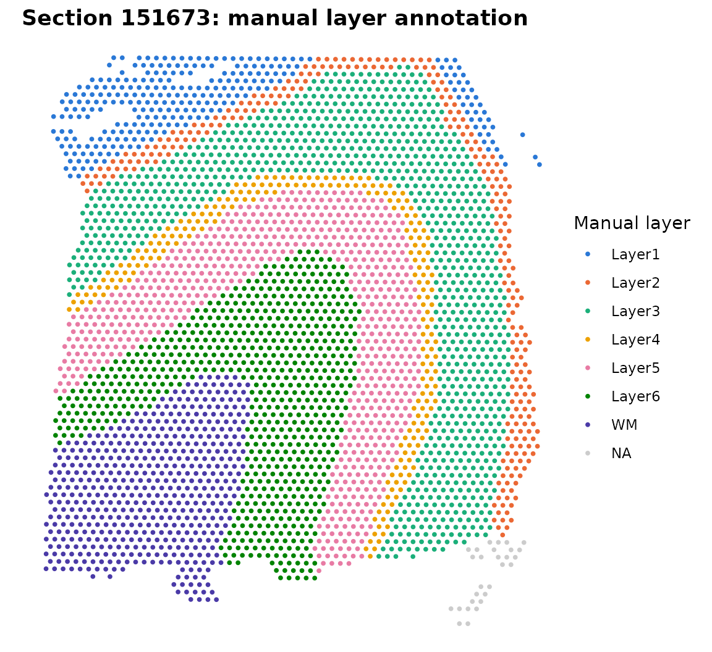
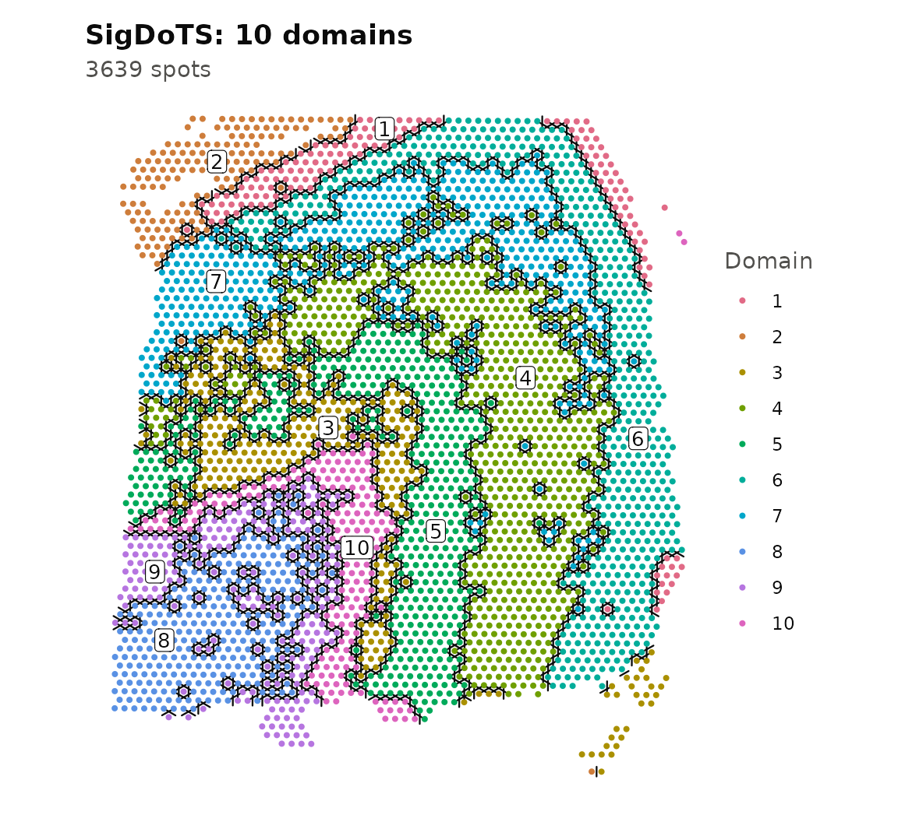
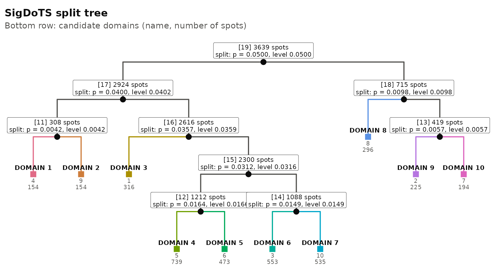
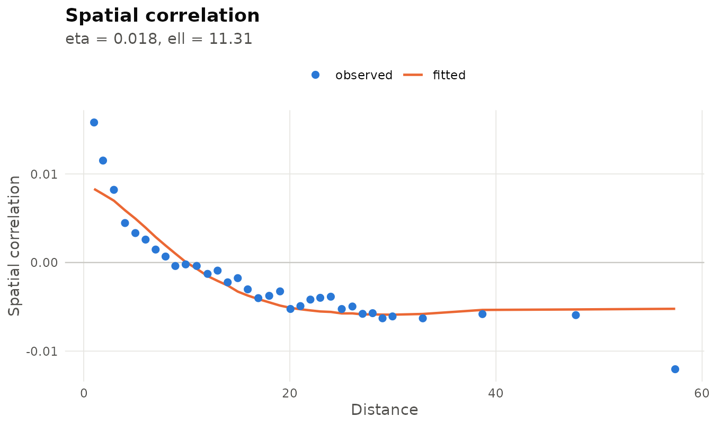
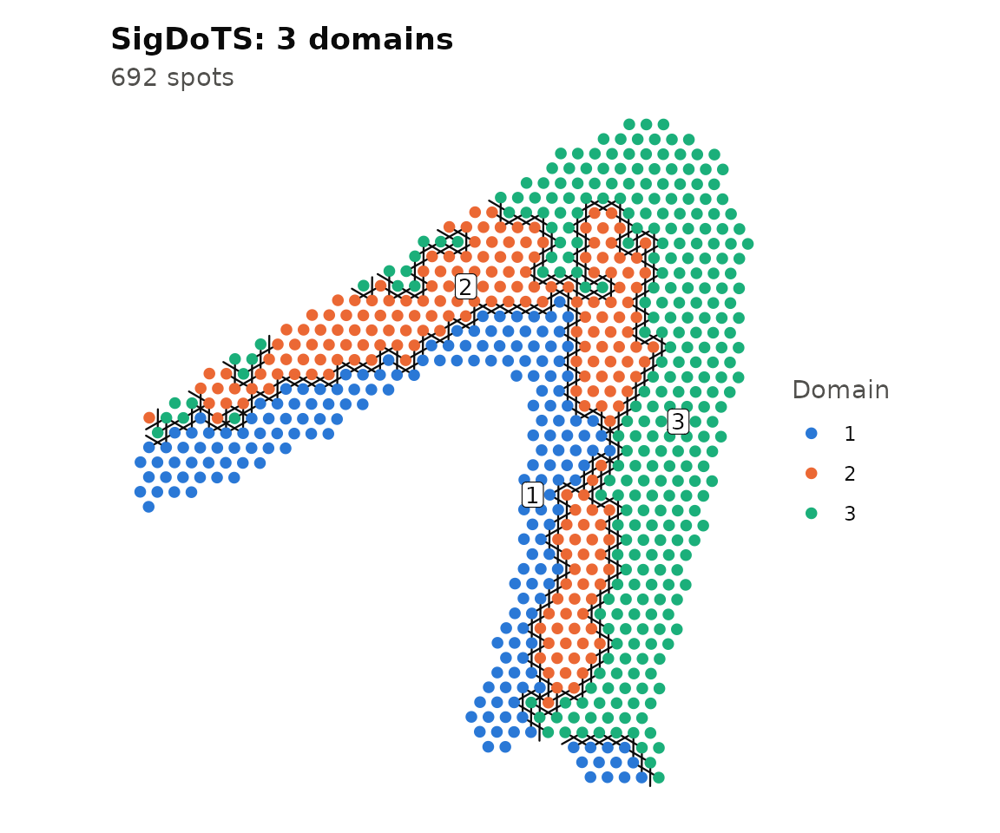
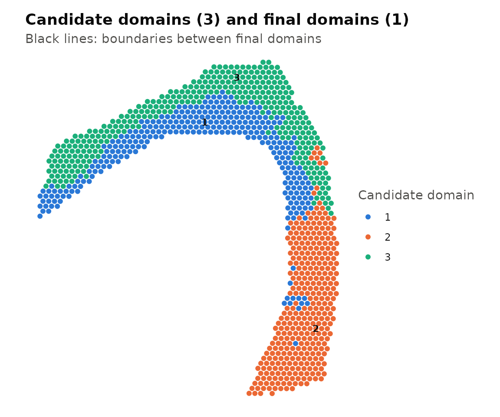

This tutorial runs SigDoTS on a public 10x Genomics Visium section of human dorsolateral prefrontal cortex (DLPFC), sample 151673 of Maynard et al. (2021). The cortex is organised in layers, and this dataset comes with every spot labelled by hand with its layer (L1 to L6 and white matter), so the result of SigDoTS can be compared with an answer that is known independently. The section has 3,639 spots over tissue.
The three runs below took 442, 26 and 16 seconds on 10 cores (2026-11-01, SigDoTS 0.2.5.8, R 4.5.1, BANKSY 1.6.0). To keep this page quick to build, the code is shown as it was run and the results are loaded from a saved file; running the code yourself gives the same results (same data, arguments and seed).
As in the SigDoTS paper, the candidate domains come from BANKSY, a
domain-detection method that uses each spot’s neighbourhood as well as
its own expression, so that its candidate domains are spatially
coherent. The package’s built-in k-means does not use positions and, on
real tissue, gives interleaved candidate domains that no merging can
turn into layers (cluster_method = "banksy" below; the
Banksy package needs R 4.4 or later).
The data
The section is available as a SpatialExperiment object
from the Bioconductor package STexampleData; the object holds the
counts, the spot positions and the layer labels.
# install.packages("BiocManager")
# BiocManager::install(c("STexampleData", "scuttle", "scran", "Banksy", "SingleCellExperiment"))
library(SigDoTS)
library(SpatialExperiment)
library(STexampleData)
library(scuttle)
library(scran)
spe <- Visium_humanDLPFC() # downloads once (about 100 MB), then cached
spe
#> class: SpatialExperiment
#> dim: 33538 4992
#> ...
table(colData(spe)$ground_truth, useNA = "ifany")#> layer
#> Layer1 Layer2 Layer3 Layer4 Layer5 Layer6 WM <NA>
#> 273 253 989 218 673 692 513 28
Preparing the data
Four lines: keep the spots over tissue, drop genes with almost no counts, log-normalise, and choose the 2,000 most variable genes. Any other normalisation and gene selection works as well.
spe <- spe[, colData(spe)$in_tissue == 1] # 3,639 spots over tissue
spe <- spe[Matrix::rowSums(counts(spe)) >= 10, ] # genes with at least 10 counts in all
spe <- logNormCounts(spe) # adds the "logcounts" assay
hvg <- getTopHVGs(modelGeneVar(spe), n = 2000) # the 2,000 most variable genesThe positions are pixel coordinates in the tissue image, where rows count downwards. Flipping the row axis makes the plots below appear the same way up as the image; the test does not care, because it uses only distances between spots.
coords <- spatialCoords(spe)
coords_plot <- cbind(x = coords[, "pxl_col_in_fullres"], y = -coords[, "pxl_row_in_fullres"])The whole section
The layers are the domains one expects, so K0, the
number of candidate domains, is set above the seven labels. With
K0 = 10, BANKSY divides the section into 10 candidate
domains (and every simulated dataset into as many candidate domains as
the part of the tree being tested has), and SigDoTS decides which of
them to merge.
fit <- sigdots(spe, coords = coords_plot, K0 = 10, genes = hvg, cluster_method = "banksy", n_cores = 10)
fit#> SigDoTS: 3639 spots, 2000 genes
#> Number of domains: 10 (spots per domain: 154, 154, 316, 739, 473, 553, 535, 296, 225, 194)
#>
#> Split tree ([node] spots, candidate domains: decision):
#> [19] 3639 spots, candidate domains 1,2,3,4,5,6,7,8,9,10: split
#> ├── [17] 2924 spots, candidate domains 1,3,4,5,6,9,10: split
#> │ ├── [11] 308 spots, candidate domains 4,9: split
#> │ │ ├── [4] 154 spots, candidate domain 4 => DOMAIN 1
#> │ │ └── [9] 154 spots, candidate domain 9 => DOMAIN 2
#> │ └── [16] 2616 spots, candidate domains 1,3,5,6,10: split
#> │ ├── [1] 316 spots, candidate domain 1 => DOMAIN 3
#> │ └── [15] 2300 spots, candidate domains 3,5,6,10: split
#> │ ├── [12] 1212 spots, candidate domains 5,6: split
#> │ │ ├── [5] 739 spots, candidate domain 5 => DOMAIN 4
#> │ │ └── [6] 473 spots, candidate domain 6 => DOMAIN 5
#> │ └── [14] 1088 spots, candidate domains 3,10: split
#> │ ├── [3] 553 spots, candidate domain 3 => DOMAIN 6
#> │ └── [10] 535 spots, candidate domain 10 => DOMAIN 7
#> └── [18] 715 spots, candidate domains 2,7,8: split
#> ├── [8] 296 spots, candidate domain 8 => DOMAIN 8
#> └── [13] 419 spots, candidate domains 2,7: split
#> ├── [2] 225 spots, candidate domain 2 => DOMAIN 9
#> └── [7] 194 spots, candidate domain 7 => DOMAIN 10
#>
#> Use summary() for the tests.SigDoTS keeps all 10 candidate domains: every one of the 9 splits is significant, with the observed statistic below that of every simulated single-domain dataset. The map of the domains next to the manual layers:

How the domains relate to the layers (spots per domain and layer):
#> layer
#> domain Layer1 Layer2 Layer3 Layer4 Layer5 Layer6 WM <NA>
#> 1 122 31 1 0 0 0 0 0
#> 2 148 4 1 0 0 0 0 1
#> 3 0 4 6 22 74 184 0 26
#> 4 0 0 193 145 393 8 0 0
#> 5 0 0 0 1 174 298 0 0
#> 6 1 197 354 0 0 0 0 1
#> 7 0 17 434 50 32 2 0 0
#> 8 0 0 0 0 0 2 294 0
#> 9 0 0 0 0 0 32 193 0
#> 10 2 0 0 0 0 166 26 0The adjusted Rand index between the domains and the manual layers is
0.36 (1 would be a perfect match, 0 no better than chance). Two things
explain the distance from 1. BANKSY’s ten candidate domains cut the
seven layers finely: Layer 1 into two bands (domains 1 and 2), Layers 2
and 3 into two (6 and 7), the white matter into three (8, 9 and 10), and
the candidate domains covering Layers 4 to 6 (3, 4 and 5) each straddle
two layers. SigDoTS can only merge the candidate domains, so a domain
follows BANKSY’s boundaries, and two layers that one candidate domain
straddles cannot be separated. And SigDoTS kept the within-layer bands:
at each of those splits the two sides differ in mean expression more
than spatially correlated noise within one domain produces. Whether an
outer and an inner band of Layer 1, or white matter next to the cortex
and deep white matter, are different domains is a question for the
biologist; the test reports that their expression differs. With fewer
candidate domains (K0 = 7), they would follow the layers
more coarsely.
The tests, from the top of the tree:
#> node spots candidate_domains statistic null_used p_value level
#> 1 19 3639 1,2,3,4,5,6,7,8,9,10 0.9189901 19 0.050000000 0.050000000
#> 2 17 2924 1,3,4,5,6,9,10 0.9876745 24 0.040000000 0.040173172
#> 3 11 308 4,9 0.9890797 237 0.004201681 0.004219351
#> 4 16 2616 1,3,5,6,10 0.9910960 27 0.035714286 0.035940077
#> 5 15 2300 3,5,6,10 0.9912114 31 0.031250000 0.031597031
#> 6 12 1212 5,6 0.9915882 60 0.016393443 0.016643760
#> 7 14 1088 3,10 0.9885821 66 0.014925373 0.014939527
#> 8 18 715 2,7,8 0.9653417 101 0.009803922 0.009813084
#> 9 13 419 2,7 0.9827080 174 0.005714286 0.005744915
#> decision
#> 1 split
#> 2 split
#> 3 split
#> 4 split
#> 5 split
#> 6 split
#> 7 split
#> 8 split
#> 9 split
The spatial correlation that SigDoTS estimated for the single-domain
model at the first test (plot(fit, type = "correlogram")):
eta is the share of the noise variance that is spatially
correlated, ell how far that correlation reaches, in units
of the distance between neighbouring spots. Here eta is
0.02 (between 0.02 and 0.03 over the nine tests): once the candidate
domains’ means are removed, the expression of neighbouring spots is only
weakly correlated, so the simulated single-domain data are close to
independent noise around a common mean.

A region of interest: Layer 6
SigDoTS can be run on any subset of spots. In the SigDoTS paper,
Layer 6 of this and three neighbouring sections was divided into three
candidate domains, and SigDoTS retained a superficial and a deep part of
Layer 6, which earlier work had reported as molecularly distinct. The
same question here, on this section alone, with K0 = 3:
l6 <- which(colData(spe)$ground_truth == "Layer6")
fit_l6 <- sigdots(spe[, l6], coords = coords_plot[l6, ], K0 = 3, genes = hvg, cluster_method = "banksy", n_cores = 10)
fit_l6#> SigDoTS: 692 spots, 2000 genes
#> Number of domains: 3 (spots per domain: 188, 203, 301)
#>
#> Split tree ([node] spots, candidate domains: decision):
#> [5] 692 spots, candidate domains 1,2,3: split
#> ├── [3] 188 spots, candidate domain 3 => DOMAIN 1
#> └── [4] 504 spots, candidate domains 1,2: split
#> ├── [1] 203 spots, candidate domain 1 => DOMAIN 2
#> └── [2] 301 spots, candidate domain 2 => DOMAIN 3
#>
#> Use summary() for the tests.On this section SigDoTS keeps all three candidate domains of Layer 6: three bands from the Layer 5 side to the white matter, each with its own mean expression. The paper, with four sections and BANKSY’s own candidate domains, reported two (superficial and deep).

A region that should not split: Layer 3
Layer 3 is the paper’s negative control: the layer is anatomically one unit, and a method that reports substructure in it would be reading noise. Three candidate domains, and the test:
l3 <- which(colData(spe)$ground_truth == "Layer3")
fit_l3 <- sigdots(spe[, l3], coords = coords_plot[l3, ], K0 = 3, genes = hvg, cluster_method = "banksy", n_cores = 10)
fit_l3#> SigDoTS: 989 spots, 2000 genes
#> Number of domains: 1 (spots per domain: 989)
#>
#> Split tree ([node] spots, candidate domains: decision):
#> [5] 989 spots, candidate domains 1,2,3: no split => DOMAIN 1
#> ├── candidate domain 2 336 spots
#> └── candidate domains 1,3 653 spots
#> ├── candidate domain 1 305 spots
#> └── candidate domain 3 348 spots
#>
#> Use summary() for the tests.The split of Layer 3 is not significant (p = 0.64: 6 of the 10 simulated single-domain datasets split at least as clearly), so SigDoTS reports Layer 3 as one domain and does not test the lower split. BANKSY’s three candidate domains within the layer are kept in the output as candidate domains only:

Two details in the output
summary(fit) for the whole section lists, after the
tests, the parts of the tree whose spots fell into separate pieces on
the 6-nearest-neighbour graph: Layer 1 is cut by a fold of the section
into pieces of 242, 49 and 14 spots, and a few single spots at the
boundaries between candidate domains have all their neighbours in other
candidate domains. SigDoTS joins such pieces by their closest spots
before building the tree, so that every simulated dataset has a
connected tree; nothing else changes.
#> SigDoTS 0.2.5.8
#> Data: 3639 spots x 2000 genes (SpatialExperiment, assay "logcounts", 2000 genes)
#> Start: banksy; 10 candidate domains
#> Spatial: Vecchia approximation (60 neighbours)
#> Level: 0.05 for the whole tree
#> P-values: Monte Carlo
#>
#> Number of domains: 10 (spots per domain: 154, 154, 316, 739, 473, 553, 535, 296, 225, 194)
#>
#> Split tree:
#> [19] 3639 spots, candidate domains 1,2,3,4,5,6,7,8,9,10: split
#> ├── [17] 2924 spots, candidate domains 1,3,4,5,6,9,10: split
#> │ ├── [11] 308 spots, candidate domains 4,9: split
#> │ │ ├── [4] 154 spots, candidate domain 4 => DOMAIN 1
#> │ │ └── [9] 154 spots, candidate domain 9 => DOMAIN 2
#> │ └── [16] 2616 spots, candidate domains 1,3,5,6,10: split
#> │ ├── [1] 316 spots, candidate domain 1 => DOMAIN 3
#> │ └── [15] 2300 spots, candidate domains 3,5,6,10: split
#> │ ├── [12] 1212 spots, candidate domains 5,6: split
#> │ │ ├── [5] 739 spots, candidate domain 5 => DOMAIN 4
#> │ │ └── [6] 473 spots, candidate domain 6 => DOMAIN 5
#> │ └── [14] 1088 spots, candidate domains 3,10: split
#> │ ├── [3] 553 spots, candidate domain 3 => DOMAIN 6
#> │ └── [10] 535 spots, candidate domain 10 => DOMAIN 7
#> └── [18] 715 spots, candidate domains 2,7,8: split
#> ├── [8] 296 spots, candidate domain 8 => DOMAIN 8
#> └── [13] 419 spots, candidate domains 2,7: split
#> ├── [2] 225 spots, candidate domain 2 => DOMAIN 9
#> └── [7] 194 spots, candidate domain 7 => DOMAIN 10
#>
#> Tests, from the top:
#> test spots statistic null_used p level decision
#> [19] 3639 0.919 19 0.0500 0.0500 split
#> [17] 2924 0.988 24 0.0400 0.0402 split
#> [11] 308 0.989 237 0.0042 0.0042 split
#> [16] 2616 0.991 27 0.0357 0.0359 split
#> [15] 2300 0.991 31 0.0312 0.0316 split
#> [12] 1212 0.992 60 0.0164 0.0166 split
#> [14] 1088 0.989 66 0.0149 0.0149 split
#> [18] 715 0.965 101 0.0098 0.0098 split
#> [13] 419 0.983 174 0.0057 0.0057 split
#>
#> Spots in separate pieces on the 6-nearest-neighbour graph (joined by their closest spots for the tree):
#> [11] 308 spots: pieces of 242, 49, 14 and 3 single spots
#> [15] 2300 spots: pieces of 2283, 9, 2, 2 and 4 single spots
#> [12] 1212 spots: pieces of 1033, 120, 9, 8, 5, 3, 3, 2, 2, 2, 2, 2, 2 and 19 single spots
#> [14] 1088 spots: pieces of 1048, 14, 5, 4, 4, 2, 2, 2 and 7 single spots
#> [18] 715 spots: pieces of 699, 12, 2 and 2 single spots
#> [13] 419 spots: pieces of 367, 12, 11, 4, 3, 3, 2, 2, 2 and 13 single spotsThe number of simulated datasets differs between tests
(null_used): a test deep in the tree has a small level, and
SigDoTS simulates as many datasets as that level needs, stopping as soon
as the decision is certain.
Writing the result back
add_domains() puts the domain of every spot into the
object, next to the other per-spot information, for whatever you do
next:
spe <- add_domains(spe, fit)
head(colData(spe)[, c("ground_truth", "sigdots_domain", "sigdots_candidate_domain")])